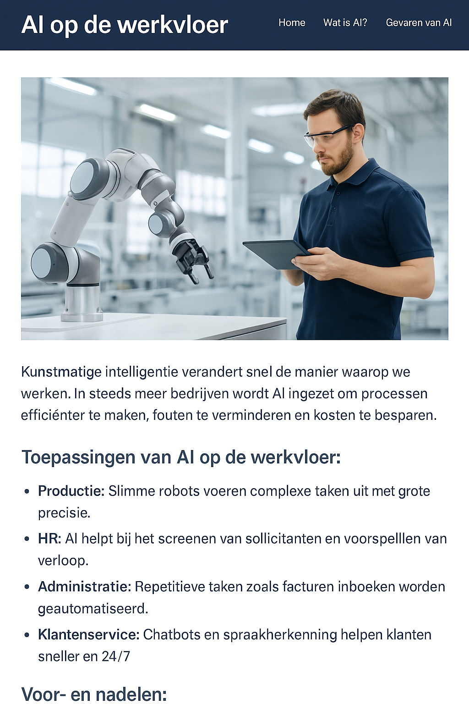

AI op de werkvloer
Kunstmatige intelligentie verandert snel de manier waarop we werken. In steeds meer bedrijven wordt AI ingezet om processen efficiënter te maken, fouten te verminderen en kosten te besparen.
Toepassingen van AI op de werkvloer:
- Productie: Slimme robots voeren complexe taken uit met grote precisie.
- HR: AI helpt bij het screenen van sollicitanten en voorspellen van verloop.
- Administratie: Repetitieve taken zoals facturen inboeken worden geautomatiseerd.
- Klantenservice: Chatbots en spraakherkenning helpen klanten sneller en 24/7.
Voor- en nadelen:
Voordelen: AI bespaart tijd, verhoogt de nauwkeurigheid en kan saaie taken overnemen.
Nadelen: Er is minder behoefte aan handmatige arbeid, en sommige banen verdwijnen.